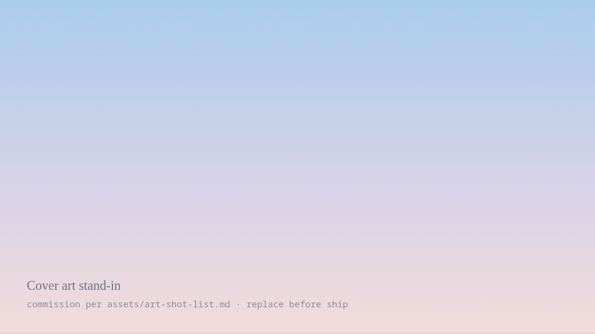

Writing
Writing
Notes on practice, and on software written as practice. Most of them begin with something that did not work.
21entries
PracticeOfferings, and what a ledger is forRecording a rite without turning it into telemetry.18.08.2026

StreamsEleven minutes of being wrong on cameraAn entry with cover art sits in the same grid, cropped 16:9.14.08.2026
CalendarsἙκατομβαιών, and the year that starts lateA Greek month name in a card title, at the same optical size.09.08.2026
EphemerisSix ayanāṁśas walk into a function signatureDiacritics in a title, set in the display face without a wobble.02.08.2026
PracticeA shrine is a data modelWhat the offerings ledger stores, and what it refuses to.28.07.2026
StreamsBuilding the sigil generator on streamThree reduction methods, and why none of them is the real one.21.07.2026